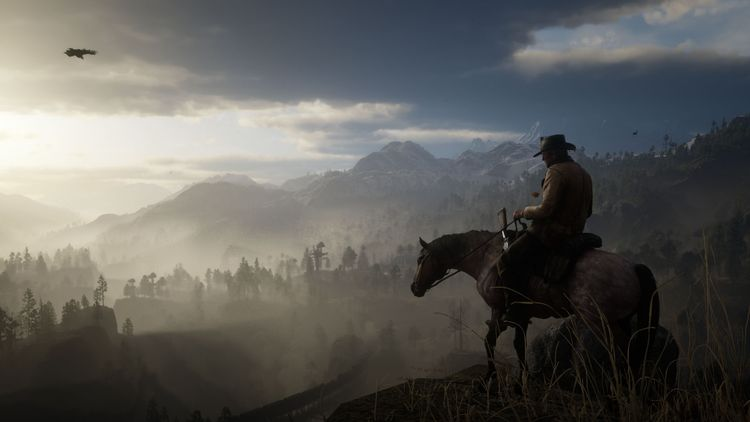
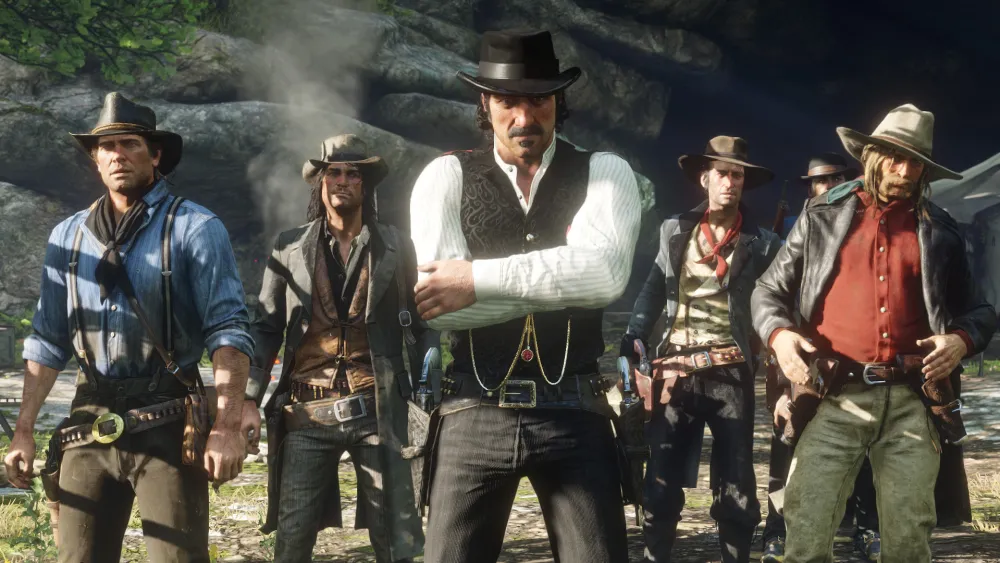

"Red Dead Redemption 2" é uma epopeia do Velho Oeste, centrada em Arthur Morgan, membro da gangue Van der Linde. Neste vasto mundo aberto, jogadores exploram terras selvagens e enfrentam desafios enquanto a gangue busca sobreviver em meio a caçadas implacáveis e conflitos. A trama habilmente tece dilemas morais, destacando as complexidades do caráter de Arthur e sua jornada de redenção. Com uma narrativa imersiva e personagens cativantes, o jogo oferece não apenas missões envolventes, mas também oportunidades para interações dinâmicas, desde duelos épicos até atividades cotidianas. A beleza visual e sonora complementa a atmosfera autêntica, enquanto escolhas do jogador moldam o destino de Arthur e da gangue. "Red Dead Redemption 2" transcende os limites dos videogames, proporcionando uma experiência cinematográfica única que captura a essência brutal e poética do Velho Oeste, solidificando seu lugar como um marco na indústria dos jogos eletrônicos.
Em um cenário deslumbrante, repleto de vastas planícies, montanhas imponentes e cidades efervescentes, os jogadores são imersos em uma jornada emocionalmente rica e visualmente impressionante. A gangue, liderada pelo carismático Dutch van der Linde, busca refúgio enquanto o mundo ao seu redor evolui. Arthur, como braço direito de Dutch, confronta não apenas ameaças externas, mas também um conflito interno sobre seus próprios valores e lealdades. As missões, meticulosamente elaboradas, oferecem uma variedade de experiências, desde intensos tiroteios até momentos reflexivos nos acampamentos. A interação com personagens secundários adiciona camadas à narrativa, revelando subtramas intrigantes e enriquecendo o mundo com detalhes autênticos. A moralidade é uma constante na jornada de Arthur, com escolhas éticas impactando não apenas seu destino, mas também a reação da gangue e o ambiente ao seu redor. A progressão da história é complementada por um sistema de honra que reflete as decisões do jogador, influenciando relações e desfechos. O jogo destaca-se não apenas por sua jogabilidade envolvente, mas também pela trilha sonora magistral e gráficos deslumbrantes. Cada raiar de sol sobre o horizonte e cada nota musical contribuem para uma experiência imersiva que transcende a mera ação virtual. "Red Dead Redemption 2" não é apenas um jogo; é uma obra-prima interativa que redefine os limites narrativos e visuais dos videogames, oferecendo uma ode ao Velho Oeste e uma reflexão sobre as escolhas que moldam o destino, tudo isso embalado em um épico inesquecível.
No centro desse épico, a relação entre Arthur Morgan e os membros da gangue proporciona uma teia complexa de conexões humanas, criando personagens memoráveis com histórias profundas. A evolução dos laços entre Arthur, Dutch, John Marston e outros membros da gangue alimenta uma narrativa rica em emoções, conflitos e momentos de pura camaradagem. A dinâmica do mundo aberto adiciona uma dimensão extraordinária à experiência. Desde a caça para obter recursos essenciais até encontros inesperados com foras-da-lei, o jogo oferece um senso vívido de realismo. As mudanças climáticas e a passagem do tempo influenciam a jogabilidade, criando um ambiente dinâmico que reage às ações do jogador. Além disso, a exploração não se limita apenas ao Velho Oeste selvagem, mas se estende a cenários urbanos e rurais, cada um repleto de detalhes autênticos. Os jogadores podem se envolver em atividades como jogos de azar, pesca e até mesmo estabelecer laços com a comunidade local, adicionando profundidade e variedade à experiência. Em última análise, "Red Dead Redemption 2" transcende as expectativas do gênero, não apenas como um videogame, mas como uma obra de arte interativa que captura a essência do Velho Oeste americano. Com uma narrativa rica, personagens cativantes, paisagens deslumbrantes e uma trilha sonora envolvente, o jogo se destaca como uma conquista monumental na indústria dos videogames, deixando uma marca indelével na memória dos jogadores.